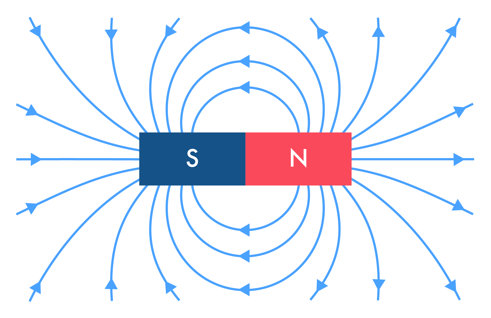
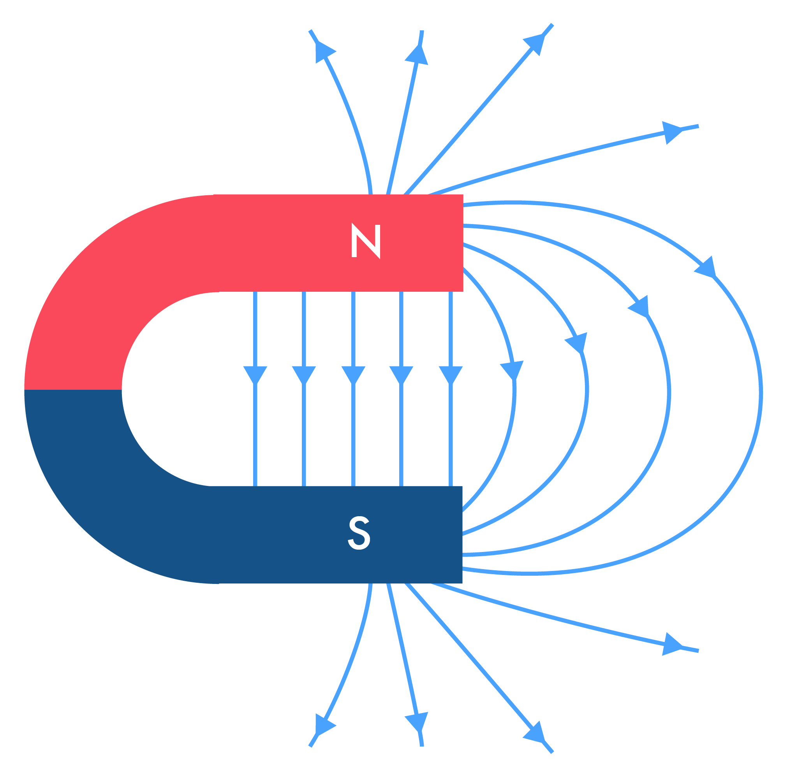

De Oersted à Ampère
Regardez la vidéo ci-dessous (3 min) puis répondez aux questions sur Socrative (12 min).
- En quelle année Ampère a t-il inventé le terme de courant électrique ?
1820
1900
1950
1700
Réponse
[X] 1820
[ ] 1900
[ ] 1950
[ ] 1700
L’électromagnétisme est une branche de la physique qui a débuté à la fin du 18ème siècle mais a essentiellement été développée dans la première moitié du 19ème siècle.
- Qui a découvert la pile électrique ?
Alessandro Volta
André Marie Ampère
Isaac Newton
Maxwell
Réponse
[X] Alessandro Volta
[ ] André Marie Ampère
[ ] Isaac Newton
[ ] Maxwell
Luigi Galvani avait découvert un phénomène qu’il qualifiait d’« électricité animale » : lorsque l’on connecte deux disques métalliques de métaux différents par une patte de grenouille, celle-ci se contracte, indiquant le passage d’un courant électrique. Volta eut l’idée de substituer à la patte de l’animal un buvard imbibé de saumure, et ses méthodes d’étude de la charge électrique lui permirent de montrer que, dans les deux cas, il y avait échange de charge électrique et apparition d’une tension entre les deux métaux.
En 1800, un différend professionnel à propos de l’interprétation biologique de Galvani poussa Volta à inventer la pile voltaïque, une pile électrique primitive débitant un courant électrique à peu près stable. Volta savait que l’accouplement de métaux le plus efficace pour produire de l’électricité est le couple zinc-argent. Il fit d’abord l’essai de deux piles branchées en série ; chacune de ces piles était un gobelet de vin rempli de saumure, dans laquelle trempaient les électrodes ; puis il remplaça les gobelets par des lamelles de carton imbibées de saumure, interposées entre les rondelles de zinc et d’argent empilées alternativement.
- Qui a découvert qu’il est possible de dévier une boussole qui normalement indique le pôle Nord ?
Alessandro Volta
André Marie Ampère
Isaac Newton
Hans Christian Ørsted
Réponse
[ ] Alessandro Volta
[ ] André Marie Ampère
[ ] Isaac Newton
[X] Hans Christian Ørsted
En avril 1820, lors d’un cours sur l’électricité qu’il faisait à ses étudiants, il découvrit la relation entre l’électricité et le magnétisme dans une expérience qui nous apparaît aujourd’hui comme très simple.
Il démontra, par l’expérience, qu’un fil transportant du courant était capable de faire bouger l’aiguille aimantée d’une boussole. Il pouvait donc y avoir interaction entre les forces électriques d’une part et les forces magnétiques d’autre part, ce qui était révolutionnaire pour l’époque.
Ørsted ne suggéra aucune explication satisfaisante du phénomène, ni n’essaya de représenter le phénomène dans un cadre mathématique. Il publia cependant le 21 juillet 1820 ses résultats expérimentaux dans un article de 4 pages en latin intitulé : Experimenta circa effectum conflictus electrici in acum magneticam. Ses écrits furent traduits et diffusés dans l’ensemble des communautés scientifiques européennes et ses résultats vivement critiqués.
-
Qu’est-ce que l’électrodynamique ?
La science des interactions entre courants électriques
Le mouvement des électrons dans le champ magnétique terrestre
L’étude du courant électrique -
Quelle est l’hypothèse fondamentale d’Ampère pour expliquer l’interaction des courants électriques et des aimants ?
Il existerait des courants électriques dans les aimants comme la Terre
Il existe deux types de charges électriques
Le champ magnétique terrestre protège la Terre des particules chargées provenant du Soleil (le vent solaire)
Réponse
[X] Il existerait des courants électriques dans les aimants comme la Terre
[ ] Il existe deux types de charges électriques
[ ] Le champ magnétique terrestre protège la Terre des particules chargées provenant du Soleil (le vent solaire)
Ampère suppose l’existence de petits courants circulaires à l’intérieur des aimants afin de généraliser l’interaction courant - courant à l’interaction courant - aimant.
Cette vision est désormais abandonnée, même si elle permet toujours d’expliquer de nombreux phénomènes.
- Comment s’oriente une boussole placée au voisinage d’un fil électrique parcouru par un courant électrique ?
Perpendiculairement
Parallèlement
Aucune orientation n’intervient
Réponse
[X] Perpendiculairement
[ ] Parallèlement
[ ] Aucune orientation n'intervient
- Qu’a inventé François Arago ?
Rien
La pile électrique
Le télégraphe
L’aimantation temporaire, base de l’électroaimant
Réponse
[ ] Rien
[ ] La pile électrique
[ ] Le télégraphe
[X] L’aimantation temporaire, base de l’électroaimant
En 1806, Arago est envoyé en Espagne, à Majorque avec Jean-Baptiste Biot pour poursuivre le relevé du méridien de Paris. Pris dans la guerre d’Espagne, alors qu’il pratique seul une opération de triangulation, il est fait prisonnier. Interné au château de Bellver, il s’évade plusieurs fois, et parvient à rejoindre Paris où il entre en héros en 1809. Cela lui permet d’être élu membre de l’Académie des sciences le 18 septembre 1809, à seulement vingt-trois ans.
Touche-à-tout, il se mêle aux expériences de mesure de la vitesse du son et étudie les cuves sous pression. Il est chargé avec Dulong de déterminer la tension de la vapeur d’eau à des pressions dépassant 3 MPa, soit 30 atm. Ses autres études sont consacrées à l’astronomie, au magnétisme et à la polarisation de la lumièree. Il détermine, par exemple, le diamètre des planètes et explique entre autres la scintillation des étoiles à l’aide du phénomène des interférences. Il inspire à Foucault son expérience des miroirs tournants, qui permet ensuite de mesurer la vitesse de la lumière avec précision. Conscient de l’importance potentielle du procédé en astronomie, il promeut la photographie alors naissante en soutenant le daguerréotype mis au point par Louis Daguerre18 : en janvier 1839, il présente devant l’Académie des sciences et l’Académie des beaux-arts réunies les premiers clichés.
- En quelle année ont abouti les travaux d’Ampère sur l’électrodynamique ?
1820 1826 1888 1839
Réponse
[ ] 1820 [X] 1826 [ ] 1888 [ ] 1839
- Que s’est-il passé en 1881 ?
Ampère montre que deux fils enroulés parcourus par un aimant se comportent exactement comme deux aimants
Ampère a découvert la tension et le courant
Ampère a construit un télégraphe
Ampère a inventé le code Morse
Les scientifiques ont décidé de nommer Ampère l’unité internationale de mesure de l’intensité du courant électrique
Réponse
[X] Ampère montre que deux fils enroulés parcourus par un aimant se comportent exactement comme deux aimants
[ ] Ampère a découvert la tension et le courant
[ ] Ampère a construit un télégraphe
[ ] Ampère a inventé le code Morse
[X] Les scientifiques ont décidé de nommer Ampère l’unité internationale de mesure de l’intensité du courant électrique
- Deux conducteurs parcourus par des courants électriques peuvent-ils interagir ?
Réponse
[X] Vrai
Un conducteur parcouru par un courant électrique produit un champ magnétique si le courant est continu et un champ électromagnétique si ce courant est variable. Ces champs peuvent interagir avec les courants électriques qui circulent dans d’autres conducteurs.
Le champ magnétique d’un aimant
Regardez la vidéo ci-dessous (de 0 à 3 min seulement) puis répondez aux questions sur Socrative (5 min).
- Qu’indique la pointe rouge d’une boussole ?
Le pôle Nord de la boussole
Le pôle Sud de la boussole
Le pôle Nord magnétique terrestre
Le pôle sud magnétique terrestre
Le pôle Nord
Le pôle Sud
Réponse
[X] Le pôle Nord de la boussole
[ ] Le pôle Sud de la boussole
[ ] Le pôle Nord magnétique terrestre
[X] Le pôle sud magnétique terrestre
[ ] Le pôle Nord
[ ] Le pôle Sud
- La pointe rouge d’une boussole correspond à son pôle Nord, c’est à dire à l’endroit d’où émergent les lignes de champ magnétique.
- Si la pointe rouge est dirigée vers une zone proche du pôle Nord géographique de la Terre, c’est parce que cette zone correspond au pôle Sud magnétique de la Terre.
-
Les boussoles, proches d’un aimant, n’indiquent pas le pôle nord terrestre. Cochez les propositions correctes.
[ ] Elles sont attirées par l’effet de la gravitation de l’aimant
[ ] Elles s’alignent selon les lignes de champ créées par l’aimant
[ ] Les lignes de champ magnétique sont modélisées comme suit pour un aimant droit  [ ] Les lignes de champ magnétique sont modélisées comme suit pour un aimant droit 
Réponse
[ ] Elles sont attirées par l’effet de la gravitation de l’aimant
[X] Elles s’alignent selon les lignes de champ créées par l’aimant
[X] Les lignes de champ magnétique sont modélisées comme suit pour un aimant droit
[ ] Les lignes de champ magnétique sont modélisées comme suit pour un aimant droit
- Les boussoles s’alignent selon les lignes de champ créées par un aimant.
- Un aimant droit produit un champ magnétique non homogène, c’est à dire dont le sens, la direction et la valeur varient dans l’espace.
- Il est possible de séparer les charges électriques positives des charges électriques négatives. En est-il de même avec les pôles Nord et Sud d’un aimant ?
Réponse
[X] Faux
Il est impossible de mettre en évidence une quelconque charge magnétique (monopole magnétique). Lorsqu’on divise un aimant en deux, on obtient… deux aimants chacun avec un pôle Nord et un pôle Sud.
La découverte du phénomène de l’induction électromagnétique
Regardez la vidéo ci-dessous (10 min) puis répondez aux questions sur Socrative (15 min).
- Quelle question s’est posée Michael Faraday ?
Est-il possible d’obtenir un champ magnétique à partir d’un courant électrique ?
Est-il possible d’obtenir un courant électrique à partir d’un champ magnétique ?
Est-il possible de créer un courant sans utiliser de piles ?
Réponse
[ ] Est-il possible d’obtenir un champ magnétique à partir d’un courant électrique ?
[X] Est-il possible d’obtenir un courant électrique à partir d’un champ magnétique ?
[X] Est-il possible de créer un courant sans utiliser de piles ?
- Quelle est la forme d’énergie source de la production d’électricité dans une pile ?
Énergie cinétique
Énergie potentielle de pesanteur
Énergie chimique
Énergie nucléaire
Réponse
[ ] Énergie cinétique
[ ] Énergie potentielle de pesanteur
[C] Énergie chimique
[ ] Énergie nucléaire
Le fonctionnement des piles électrique est basé sur la conversion d’énergie chimique en énergie électrique.
- La lampe s’allume lorsque :
L’aimant est immobile près de la bobine
L’aimant s’approche de la bobine
L’aimant est loin de la bobine
L’aimant s’éloigne de la bobine
Un champ magnétique agit sur la bobine
La bobine s’approche de l’aimant
La bobine s’éloigne de l’aimant
Réponse
[ ] L’aimant est immobile près de la bobine
[X] L’aimant s’approche de la bobine
[ ] L’aimant est loin de la bobine
[X] L’aimant s’éloigne de la bobine
[ ] Un champ magnétique agit sur la bobine
[F] La bobine s’approche de l’aimant
[ ] La bobine s’éloigne de l’aimant
- Le phénomène d’induction intervient lorsque la distance relative entre l’aimant et la bobine varie (quel que soit ce sens de variation).
- Plus cette variation est rapide, plus l’intensité du courant induit est grande.
- Quel est le secret pour créer un courant dans un fil électrique ?
Appliquer un champ magnétique à ce fil
Appliquer un champ magnétique variable à ce fil
Le brancher sur une prise électrique
Réponse
[ ] Appliquer un champ magnétique à ce fil
[X] Appliquer un champ magnétique variable à ce fil
[ ] Le brancher sur une prise électrique
Le phénomène d’induction intervient aussi lorsqu’un champ magnétique d’intensité variable dans le temps agit sur la bobine.
- Quelle est la différence entre un courant induit et un courant électrique simple ?
le courant électrique simple est produit par une pile alors que le courant induit est produit par un champ magnétique variable
L’intensité des courants simples est inférieure à l’intensité des courants induits.
Les deux types de courant sont identiques, c’est la manière de les générer qui est différente.
Réponse
[ ] le courant électrique simple est produit par une pile alors que le courant induit est produit par un champ magnétique variable
[ ] L’intensité des courants simples est inférieure à l’intensité des courants induits.
[X] Les deux types de courant sont identiques, c’est la manière de les générer qui est différente.
Le courant électrique est un déplacement d’ensemble de charges électriques. Que le courant soit produit par une pile ou par le phénomène d’induction ne change rien à cette définition.
- Donner une définition de l’induction électromagnétique à partir de tous les éléments vus précédemment : (L’objectif n’est PAS de recopier un dictionnaire !)
Réponse
Le phénomène d’induction intervient chaque fois que le flux magnétique (comprendre l’ensemble des lignes de champ) qui traverse la surface formée par la bobine varie, que cette variation soit due à un déplacement dans l’espace ou à une variation dans le temps.
Un courant électrique circule alors dans la bobine.